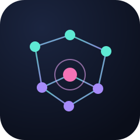

Cloud-native anomaly detectionA hybrid framework that fuses an adaptive, sparsified knowledge graph of microservice, pod, and physical-node relationships with a dual BiLSTM + GAT attention network, closing the visibility gap between logical service failures and shared physical hardware bottlenecks.
Microservices scale, fail, and migrate across nodes faster than static dependency graphs can track, and logs fragmented across Istio, Kubernetes, and node-level telemetry make manual correlation impractical. DKG-TLAN targets the specific failure mode existing detectors miss: distinguishing a logical service-level bug from a shared physical hardware bottleneck.
Reconstructs physical-to-virtual structural relationships from Istio traces, raw logs, and Kubernetes orchestration metadata via adaptive, sparsified adjacency learning.
Parallel multi-scale Conv1D feature extraction fused with a dual BiLSTM (temporal) + GAT (structural) branch, capturing sequential and topological patterns simultaneously.
A learnable gate fuses temporal and structural evidence into a single anomaly score, ranking the true physical point of failure via PR@K and MRR.
End-to-end pipeline from raw telemetry to root-cause ranking.
Istio traces + raw logs + K8s orchestration metadata
│
▼
┌─────────────────────┐
│ Dynamic Knowledge │ adaptive adjacency learning + sparsification
│ Graph (DKG) │
└──────────┬───────────┘
│ adjacency matrix
▼
┌─────────────────────┐
│ Multi-Scale Feature │ Conv1D kernels {3, 5, 7} + softmax fusion
│ Extraction │
└──────────┬───────────┘
│
┌───────┴────────┐
▼ ▼
┌────────┐ ┌──────────┐
│ BiLSTM │ │ GAT │ temporal vs. logical/structural branches
│(h_temp)│ │ (h_log) │
└───┬────┘ └────┬─────┘
└───────┬─────────┘
▼
┌─────────────────────┐
│ Cross-Layer │ cosine correlation + learnable gate
│ Correlation & Fusion │
└──────────┬───────────┘
▼
┌─────────────────────┐
│ GMM Anomaly Scoring │ NLL score + EMA drift adaptation
└──────────┬───────────┘
▼
anomaly score + root-cause ranking (PR@K, MRR)
Evaluated on the Sock Shop polyglot microservice benchmark (13 services) deployed on AWS EKS, against ResNet-50, LSTM, and GNN baselines.
| Model | Accuracy | Precision | Recall | F1-Score | MRR |
|---|---|---|---|---|---|
| ResNet-50 | 92.45% | 89.12% | 90.55% | 89.33% | 0.684 |
| LSTM | 94.67% | 92.34% | 93.12% | 92.73% | 0.752 |
| GNN | 95.82% | 94.10% | 95.22% | 94.66% | 0.841 |
| Proposed DKG-TLAN | 99.75% | 98.53% | 99.64% | 98.46% | 0.963 |
A framework-faithful reference implementation of the core modules (Eq. 1–18 in the paper).
pip install -e ".[dev]" python -c " import torch from dkg_tlan import DynamicKnowledgeGraph, TemporalLogicalAttentionNetwork node_features = torch.randn(13, 16) window = torch.randn(1, 32, 16) dkg = DynamicKnowledgeGraph(feature_dim=16) adjacency = dkg(node_features)['adjacency'] tlan = TemporalLogicalAttentionNetwork(input_dim=16, hidden_dim=8) out = tlan(window, node_features, adjacency) print(out['h_temp'].shape, out['h_log'].shape) " pytest tests/ -v
Published in the proceedings of the 2026 4th International Conference on
Intelligent Cyber Physical Systems and Internet of Things (ICoICI),
IEEE. DOI:
10.1109/ICoICI69824.2026.11724336.
To cite the software itself, see
CITATION.cff.
@inproceedings{mudusu2026dkgtlan,
title = {Anomaly Detection by using Dynamic Knowledge Graph with
Temporal Attention Network},
author = {Mudusu, Sunil Kumar and Gentyala, Sunil and Pendyala, Manasa},
booktitle = {2026 4th International Conference on Intelligent Cyber
Physical Systems and Internet of Things (ICoICI)},
year = {2026},
publisher = {IEEE},
doi = {10.1109/ICoICI69824.2026.11724336}
}